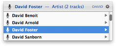
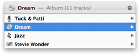
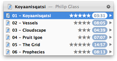
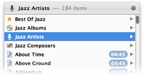

| Topics |
LaunchBar’s Actions indexing rule provides a number of actions for controlling iTunes playback:
| Play | Starts playback |
|---|---|
| Pause | Pauses playback |
| Play/Pause | Toggles between Play and Pause |
| Next Song | Jumps to the next song in the current playlist |
| Previous Song | Jumps to the previous song in the current playlist |
| Fast Forward | Skips forward in the currently playing song |
| Rewind | Skips backwards in the currently playing song |
| Back Track | Jumps back to the beginning of the current song |
When you open a single song for playback in iTunes, LaunchBar provides two different playback modes:
You can choose your preferred playback mode in the Actions pane of LaunchBar preferences.
Select iTunes (or the iTunes Library indexing rule) in LaunchBar and press the right arrow key to browse the contents of your music library.
|  | To search for a particular song, artist, album, etc., you can select and sub-search the corresponding category. |
|  | To display the details of the currently selected song (artist, album, genre and composer) press the right arrow key. |
|  | Browsing an album displays all tracks along with track number, rating and playing time. |
|  | Browsing a genre, an artist or a composer displays related information such as the corresponding Best of List, albums or artists for the selected genre, albums and genres of the selected artist, etc. |
Music items (songs, playlists, albums, artists, etc.) can be added to the iTunes DJ playlist using the Play in iTunes DJ, Play Next in iTunes DJ and Add to iTunes DJ commands. Invoking these commands keeps the LaunchBar search result menu visible - it just flickers the selected item, allowing you to quickly select further items from the menu.
Top rated songs of a particular artist, composer or genre are automatically collected in smart lists, the so called Best Of Lists. They can be accessed either directly, by entering e.g. BOJZ to select the Best Of Jazz list, or via browsing by selecting e.g. an artist and pressing Right Arrow to get a list of this artist’s best tunes.
By default, songs rated with 4 stars or better are included in these Best Of Lists. You can choose a different threshold in the Options pane of the iTunes indexing rule.
The Direct Access > Primary Artists configuration setting allows you to access classical and soundtrack pieces by composer, and contemporary music by artist (assuming that in most cases you rather know the interpreter of a contemporary song, but the composer of a classical work). When using this option, you should turn off the Artist/Composer options in return.
The song that’s currently played in iTunes can be retrieved quickly by selecting the iTunes application and pressing the right arrow key. Pressing the right arrow key again shows further details such as album, artist, composer and genre allowing you e.g. to quickly select songs from the same album or artist.
When a music item (song, playlist, album, artist, etc.) is opened with Return, the playback is started in background, without activating iTunes. However, if the item is opened with Control-Return instead, iTunes will be activated in addition to starting the playback.
The Show in iTunes action (Command-Control-Return) reveals a selected song in iTunes without playing it.
Use this action for example to edit some attributes of a particular song in iTunes (change the rating, open the Get Info window, etc.).
When LaunchBar indexes your iTunes Library, it reads an XML mirror file of the library, which is created and updated by iTunes whenever you make changes to your library. However, if you rename or move a song file in Finder, iTunes doesn’t notice this change, therefore it doesn’t update the XML mirror. iTunes itself has no problem with such external changes since internally it references your music files via aliases, which are more resistant against renaming and moving the underlying files. The XML mirror however only contains the file’s absolute Unix file path, which becomes invalid when you rename or move the file.
Usually it’s possible to work around this issue by opening the "Get Info" window for the affected songs in iTunes. This helps iTunes to get aware of the song’s new Unix file path, and the XML mirror will be updated the next time it’s written.
Another way to make iTunes aware of these changes is to open the affected song files from within Finder via double click or Command-O (provided that they are then opened iTunes). Alternatively you can drag them from Finder onto the iTunes Dock icon.